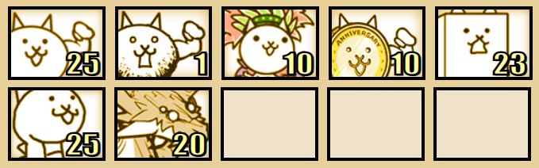

Crazed Tank
Must-Have Units¶
- Crazed Bahamut Cat - Crazed Bahamut is your only non-Uber backliner option for this stage. At level 20, he does enough damage to oneshot the Gories and Owlbrows, and half of Duche’s health.
- Crazed Cat - A fast meatshield is basically required here so Crazed Tank doesn’t push super far. Without him, you would get destroyed by Owlbrows and Gories.
Great-To-Have Units¶
- Paris Cat - Paris can help a lot with the Duches and Gories. If you choose to use Paris, however, you cannot use CPU. Other alternatives to Paris include Castaway, Drama and Weightlifter, although they perform worse.
- Bath Cat - Basically a second Dragon Cat. Helps a lot just with being more stackable DPS.
Useful Uber Rare Units¶
- Generic Backliner Ubers - B.C.S Tigerclaw, Jizo’s Megacastle, Catman, etc.
- Shadow Gao - Outranges everything here by a good margin and has Massive Damage towards nearly everything, including the boss, here.
Lineup and Strategy¶
Generic Endurance Strat¶

+Sniper
Video - Courtesy of Waran-ess
Note: This strategy can be rather inconsistent, even if you try to follow the video as closely as possible and have very similar levels, so you may need to retry more than a few times. Should CBahamut die without being close to being off cooldown, you’re most likely screwed.
Finally, Sniper is very important here as a powerup as your only accessible method of pushing back CTank and regaining ground from it. Now onto the actual strategy.
At the start of level, build up and level up your wallet a bit (but leave enough to spawn CBaha quickly), lure the Snaches near base and use a couple of Walls to stall them. Once the Gories come, spam a few meatshields before then spawning Bahamut to quickly kill the Gories. After they’re dead, continue stalling the Snaches with Walls. Once Owlbrowos come, switch to spamming a few meatshields. Once the Duches spawn, you can basically just turn on CPU and Sniper and let them do the job from here.